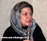

پذيرش > کمپین در بند > خدیجه مقدم > گفتگو با خدیجه مقدم فعال جنبش زنان در خصوص ممانعت ماموران امنیتی از برگزاری مراسم ختم (...)


 گفتگو با خدیجه مقدم فعال جنبش زنان در خصوص ممانعت ماموران امنیتی از برگزاری مراسم ختم مادر همسرش در منزل /روز گفتگو با خدیجه مقدم فعال جنبش زنان در خصوص ممانعت ماموران امنیتی از برگزاری مراسم ختم مادر همسرش در منزل /روز
29 دی 1386 - - نسخه قابل چاپ
خديجه مقدم، از فعالان قديمي جامعه مدني و از اعضاي کمپين يک ميليون امضا براي تغيير قوانين، هفته پيش به دليل فشارهاي مقامات امنيتي از برگزاري مراسم ختم مادرهمسرش درمنزل خود بازماند.او در مصاحبه با روز علاوه برشرح بخش هايي از ماجراي بر هم زدن مراسم ياد شده، تحليل خود را از وضعيت کنوني کمپين و همچنين تاثير برخوردهاي امنيتي با جامعه مدني بيان کرده است.
ممانعت از برگزاري مراسم ختم در منزل يک فعال حقوق زنان، بعد از برهم زدن تجمع خانوادگي اعضاي فعال جنبش کارگري درماه گذشته، دومين دخالت آشکارمقامات امنيتي درزندگي شخصي فعالان اجتماعي به شمار مي رود که واکنش هاي مختلفي را برانگيخته است. خديجه مقدم که درميان فعالان سازمان هاي غيردولتي به صبوري، ملايمت و شهره است مي گويد: "حتي درخانه خود نيز احساس امنيت نمي کند". متن اين گفت و گو در زير مي آيد.
جلوگيري از مراسم ختم مادرهمسرتان خيلي غيرمنتظره بود. آيا ازاين به بعد فعالان اجتماعي براي مراسم ختم وعروسي هم بايد از پليس امنيت اجازه بگيرند؟
اينطور به نظر مي رسد. من به دليل دستگيري جلوه جواهري و مريم حسين خواه نتوانستم بعد ازفوت مادرهمسرم، مراسمي درمنزل برگزارکنم. برخي از دوستان واقوام وهمسايگان ودوستان کمپيني من تصميم گرفتند که يک روز براي تسليت پيش ما بيايند. من هم موافقت کردم وقرارشد شنبه مجلسي درمنزل ما برگزارشود. از ساعت سه بعد ازظهر شروع کردند به تلفن زدن که شما نمي توانيد اين نشست را برگزار کنيد. من درپاسخ گفتم که من دراين مملکت زندگي مي کنم ومي خواهم که دراين مملکت زندگي کنم. ما عزاداري و جشن داريم ومي خواهيم زندگي کنيم. گفتند که نمي شود و بايد مجوز داشته باشيد. گفتم شما بر اساس چه قانوني اين را مي گوييد؟ گفتند که ما خودمان قانون هستيم و شما بايد به پليس امنيت بياييد. گفتم که نمي آيم وشما هم نمي توانيد به صورت شفاهي ازمن بخواهيد که بيايم. گفتند پس کتبي برايتان احضاريه مي فرستيم. نيم ساعت بعد احضاريه کتبي پليس گيشا را به منزل ما آوردند ويک ماشين که دو نفر سرباز ودونفر لباس شخصي بود نيز آمدند. کارت شناسايي شان نشان مي داد که ازاداره اطلاعات وپليس امنيت بودند. ازمن خواستند با آنها بروم. من نرفتم. فکر کنيد که احضاريه را ساعت سه ونيم تحويل مي دهند ومي گويند که ساعت چهار فلان جا باش. گفتم: گفته اند که ساعت چهار آنجا باشم ولي نگفته اند که با شما بيايم. آنها ايستادند دم در ومن با وکيلم شيرين عبادي صحبت کردم که ايشان تاکيد کرد همين احضاريه هم غيرقانوني است، چرا که فقط دادستان مي تواند احضاريه کتبي صادر کند. در همين حال مي ديدم که ميهمانان مي آيند وآنها نمي گذاشتند آنها وارد شوند.
چه مواردي را درصحبت هاي خود مطرح مي کردند؟ آيا اساسا موضوع برگزاري مراسم عزا مشکل بود؟
آنها درصحبت هايشان مي گفتند کمپين يک ميليون امضا غيرقانوني است. من به آنها گفتم: براساس چه قانوني مي گوييد کمپين مسالمت آميز زنان غيرقانوني است؟ گفتم حرکت هاي شما غيرقانوني است. اگر ماده قانوني داريد که بگويد حرکت من غيرقانوني است نشان دهيد تا من از آن تبعيت کنم. ما همين قوانين را هم مي خواهيم تغيير کند، اما تا وقتي تغيير نکرده ما از آن تبعيت مي کنيم. پاسخي براي گفتن نداشتند وگفتند همکاران ما نيستند صبح بياييد تا ما بتوانيم مواد قانوني را نشانتان بدهيم. به هرحال حرکتشان بسيار زشت وناپسند بود. مهمان هاي من از راه هاي دور آمده بودند، ازجنوب شهرگرفته تا شميران وکرج. يک سري آنها مجبور شدند برگردند ويک سري هم با من به اداره پليس آمدند. آنها مي خواستند ازمن تعهد بگيرند که هر وقت پليس امنيت احضارم کرد بروم. من گفتم چنين تعهدي نمي دهم. براي اينکه چنين قانوني نداريم که پليس براي يک جلسه ختم يا عروسي ويا نشستي که غيرقانوني نيست، کسي را احضار کند. ما انقلاب کرديم قانون اساسي نوشته شده، براساس ماده 27 مي توانيم تجمع کنيم مادامي که مسالمت آميز است. اما متاسفانه ما درخانه خود هم امنيت نداريم. به هرحال جلسه ما را به هم زدند. من هم گفتم: فقط با دستور کتبي دادستاني مي توانيد من را احضار کنيد وديگر با احضاريه پليس امنيت حاضر نخواهم شد چرا که پليس امنيت تنها درشرايط حکومت نظامي مي تواند چنين احکامي را صادر کند.
دوستانم يعني کميته مادران کميپين يک ميليون امضا در جلوي پليس امنيت تجمع کرده بودند. من به آنها گفتم که مصرهستم به شما بگويم حرکتتان زشت است واصلا امنيت کشوررا شما به خطر مي اندازيد. گفتند که شما هنوز جلسات کمپين را برگزار مي کنيد؟ گفتم بله. ما طبق روال معمول اين جلسات را برگزار مي کنيم ومانند صدها عضو کمپين خيلي ازجلسات در منزل ما برگزارمي شود وخواهد شد. ما از خيلي ازفرهنگسرا ها با دادن مشخصات کامل تقاضاي مکان کرده ايم که نشست هاي خود را درمکان هاي عمومي برگزار کنيم. من وهمسرم روي هم رفته شصت سال دراين مملکت کارکرديم وماليات داديم اما نمي توانيم با دادن کرايه يک سالن از آن استفاده کنيم. نشستي که مي توانيم در سالن را براي مردم وحتي خود آقاياني که معترض هستند بازبگذاريم تا بيايند ببينند چه مي گوييم.
دربين گفت وگوهايتان متوجه شديد که ريشه نگراني هاي آنها چه بود؟ درواقع چه چيزي باعث مي شد که بخواهند تن به پيامد هاي يک اقدام غيرمنتظره غيرمتداول بدهند که به قول شما تنها درشرايط حکومت نظامي قابل فهم است؟
نگراني شان مردمي شدن کمپين است؛ چرا که کمپين باهمه محدوديت هايي که ايجاد مي کنند خيلي خوب به حرکت خود ادامه مي دهد. غافل ازاينکه مساله زنان عمومي شده و حتي خيلي ازمسئولان و فقها خواستار تغيير قوانين شده اند. درخود مجلس ازفعالين زنان خواسته اند که بروند آنجا بحث وگفت وگو کنند. اينها نشان مي دهد کمپين تا به اين اندازه موفق بوده است. متاسفانه اينها با برابري حقوق زن ومرد مخالف هستند وهرکسي را با يک انگي مي خواهند ازميدان به در کنند. يک جواني را با دوستانش درخانه اش مي گيرند و مي گويند شما جلسه گلدکوييست داريد، يکي را مي گيرند ومي گويند تشويش اذهان عمومي است و ديگري را مي گويند اقدام عليه امنيت ملي ودرهيچ کدام موضوع کمپين را مطرح نمي کنند. چرا که کمپين آنچنان حرکت شفاف، اصولي ودرستي است که نمي توانند بگويند به خاطر آن شما را احضار کرده ايم. هرکسي را به بهانه اي متوقف مي کنند. به هرحال دوستان من آنجا بودند ومن را آزاد کردند.
به نظر شما تاثير چنين اقداماتي، علي رغم همه هزينه هايي که براي فعالان اجتماعي چون شما دارد و حتي منجر به مختل شدن زندگي روزمره تان مي شود، روي حرکت هاي مسالمت آميزي مانند کمپين تغيير براي برابري چيست؟
تاثير برعکس مي گذارد چرا که مردم متوجه مسائل هستند. اگر آنها مي خواهند کاري کنند که کار کمپين را متوقف کنندعکس آن اتفاق خواهد افتاد. ببينيد مردمي که از کرج وديگر مسافت هاي دور آمده بودند، فعالان اجتماعي و اعضاي کمپين، من را مي شناسند ومي دانند من کار درستي انجام مي دادم. درنتيجه چنين اقداماتي، ماهيت مخالفان کمپين را نشان مي دهند ودرنتيجه مردم به ماهيت آنها پي مي برند و مي بينند چطور جلوي آزادي هاي مشروع را مي گيرند ومردم را محکوم مي کنند واز خود مي پرسند مگر اينها چه مي گويند که با چنين مخالفتي، حتي دربرگزاري يک مراسم ساده ختم درمنزلشان، مواجه مي شوند؟ بنابراين درمجموع به نفع کمپين تمام مي شود. ممکن است نتوانيم به سرعت يک ميليون امضا جمع کنيم و روي سرعت اخذ امضاها تاثير بگذارد ـ کما اينکه گذاشته- اما درمجموع صدمه اي به اصل روند نمي زند. به شما بگويم که هم اکنون چندين ميليون نفر موافق کمپين هستند، اما به خاطرمحدوديت هايي که ايجاد کرده اند امضاهايمان به يک ميليون نرسيده است. مردم شايد بترسند وامضا نکنند اما با آن موافق هستند. اين حرکت ها ما را درتصميم هايمان مصرتر وجدي تر مي کند که بايد به راهمان ادامه بدهيم تا چنين بي عدالتي هايي ازبين برود. با توجه به اينکه مطالبي که ما مطرح مي کنيم کف وحداقل مطالبات ماست. اما آنها اين حداقل خواسته هاي ما را هم نمي توانند تحمل کنند. درنتيجه ما بايد با انرژي وتوان بيشتري به راهمان ادامه بدهيم.
تاثير اين برخوردها روي فعالان جوان جامعه مدني که مي بينند افرادي به خوشنامي شما نيز با چنين رفتارهاي ناپسندي مواجه مي شوند، چيست؟
تاثير مثبت دارد چون جوانان مي بينند کسي راکه سن وسالي از او گذشته براي برگزاري يک مراسم ساده ختم درمنزلش احضار مي کنند ومي برند به پليس امنيت و مي گويند که کارشان غيرقانوني است - ومن از پليس امنيت شکايت خواهم کرد ـ واينها مي رود درسايت ها واخبار وپخش مي شود و جوان ها مي بينند که اينجوري نيست؛ که احضار پليس امنيت وکلانتري کارهايي غيرقانوني است واينها حق ندارند اين کارها را انجام بدهند. بعد هم روند پيشرفت کمپين کند نمي شود. آموزشي براي جوان ها خواهد بود. از طرف ديگر همان کساني که ازجنوب شهر مي آيند مي بينند که چقدر اين حرکت ها زشت است وآنهايي که با ما موافق نبوده اند با ما موافق مي شوند. درنهايت اين نوع برخوردهاي زشت وزننده به ضرر آنها تمام مي شود. ما دوست داريم درآرامش به اين حرکت مسالمت آميزادامه بدهيم ولي درتصميم ما چنين اقداماتي تاثيري ندارد، حتي ما را مصمم تر هم مي کند.
چه رفتاري را از حکومت انتظار داريد؟ يعني اگر فهم متفابلي وجود داشت چگونه مي توانستند ازظرفيت هاي کمپين زنان براي تغيير قوانين به عنوان اقدامي خودجوش براي بهبود وضعيت زنان درجامعه استفاده کنند؟
با اين حرکت مسالمت آميز بايد درست برخورد کنند. ما در حال تقويت جامعه مدني هستيم. ما کاري را انجام مي دهيم که به صورت سنتي جزو کارويژه هاي دولتهاست و آن همانا بالابردن فرهنگ جامعه است. ما از جان ومال وزندگي مان مايه مي گذاريم که فرهنگ عمومي بالا برود. شما مي بينيد درکشوري مثل مراکش، پادشاه اين کشورخودش مايل به تغيير قوانين بود ولي به خاطر اينکه بتواند ازروحانيت اجازه بگيرد اين طرح را آنجا اجرا کردند وحتي براي اينکه با مردم صحبت وآنها را آگاه کنند بودجه تخصيص دادند. آن هم نه به شکل کاري که ما انجام مي دهيم، ولي با اين حال جمع کردن يک ميليون امضا براي آنان چندين سال طول کشيد. اما ما با همه محدويت هايمان آگاهي خيلي زيادي به مردم مي دهيم وسرعت کارمان خيلي بيشتر است. اگر حکومت بخواهد واقعا به نفع مردم کارکند بايد خيلي هم ازاعضاي کمپين ممنون باشد که اينقدر دلسوزانه براي پيشرفت وتوسعه کشورشان وبالا بردن فرهنگ عمومي جامعه وتاثير گذاشتن روي قانون گذاري کار مي کنند. ما انتظار جايزه نداريم اما تنبيه هم نبايد بشويم.
کمپين يک ميليون امضا براي تغييرقوانين حوزه زنان طي دوسال گذشته روند شفاف، مسالمت آميز و همگرايانه اي داشته است. چرا بخش هايي ازحاکميت چنين ويژگي هايي را ناديده مي گيرند وبا چشماني کاملا بسته، موجب آزار واذيت شهرونداني مي شوند که به قول شما اگر درانتظار دريافت جايزه نباشند، شايسته تنبيه نيز نخواهند بود؟
دوست ندارند مردم به اين شکل مشارکت کنند. آنها رابطه خوبي با سازمان هاي غيردولتي ومشارکت آنها در حل مسائل کشورندارند. نمي توانند ببينند مردم با همدلي وهمراهي هم تصميم بگيرند و بخشي ازسرنوشت خود را تغيير بدهند. به نظرم حتي چنين چيزهايي براي آنها خوشايند نيست. ما طرفداران محيط زيست، حتي نمي توانيم مجوز بگيريم که يک تجمع براي مسائل محيط زيستي مسائل شهر وکشورمان برگزار کنيم. اينها که اجازه نمي دهند ما درمورد محيط زيستمان هم با مردم صحبت کنيم، فکر مي کنيد درمورد تغيير قوانين تبعيض آميز وزن ستيز مايل هستند که با گفت وگوکنند؟
منبع:روز-امید معماریان
ارسال به
بالاترین
،
توییتر
،
فریندفید
،
فیسبوک
در همين بخش :
 بهاره هدایت را آزاد کنید؛ درخواست ۴۵۵ تن از فعالان زنان، دانشجویی واجتماعی از قوه قضاییه بهاره هدایت را آزاد کنید؛ درخواست ۴۵۵ تن از فعالان زنان، دانشجویی واجتماعی از قوه قضاییه
بیانیه بیش از ۱۵۰ تن از مدافعان حقوق بشر بین المللی برای آزادی بهاره هدایت و مریم شفیع پور
ششمین روز از کمپین «ده روز با بهاره هدایت» با عنوان «روز سلامت»
پیام ضیا نبوی و مجید دری از زندان کارون اهواز به کمپین«ده روز با بهاره هدایت»
روز پنجم از کمپین ده روز با بهاره هدایت:« بهاره، یک فرزند و یک خواهر است»
ديگر بخش ها :
طرح یک میلیون امضا
|
مقالات
|
سایت نوشته ها
|
اخبار
|
گزارش كمپين
|
گفت و گو
|
علیه سکوت
|
كوچه به كوچه
|
نامه های شما
|
گزارش ویژه
|
گفتگو با اعضا
|
ویژه سالگرد کمپین
|
تصویر برابری
|
دل آرام علی
|
تریبون
|
مقالات
|
تاریخ شفاهی
|
خارج از چارچوب
|
کتابخانه
|
درباره کمپین
|
کمپین در شهرها
|
کمپین در بند
|
صدای تغییر
|
ویژه 22 خرداد
|
لایحه حمایت از خانواده
|
گالری
|
عشا مومنی
|
امیر یعقوبعلی
|
خدیجه مقدم
|
راحله عسگری زاده و نسیم خسروی
|
پروین اردلان،جلوه جواهری، مریم حسین خواه، ناهید کشاورز
|
زینب پیغمبرزاده
|
سعیده امین، سارا ایمانیان، محبوبه حسین زاده، ناهید کشاورز و همایون نامی
|
احترام شادفر
|
نسیم سرابندی زاده،فاطمه دهدشتی
|
وبلاگ مهمان
|
پرونده خرم آباد
|
دستگیری ها
|
مریم مالک
|
پرستو اللهیاری
|
مهرنوش اعتمادی
|
سمیه رشیدی
|
Other Languages
|
همراهان
|
«فراخوان کمپین ده روز با بهاره هدایت»
| English
|